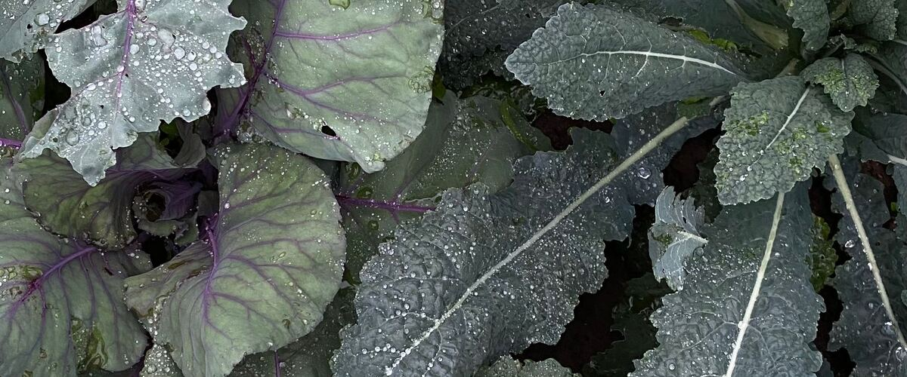

Timing and seasons · Oregon · Washington · Idaho
Fall and Winter Vegetable Gardening West of the Cascades
West of the Cascades, kale, leeks and carrots keep going through most winters. The catch is planting them in July and August.

Most of the country puts the garden to bed in October. West of the Cascades you don't have to. Portland's typical first fall frost isn't until November 19, Seattle's is around November 23, and winters are usually mild enough that hardy crops keep growing slowly or simply hold in the ground until you're ready to pick them.
The catch is timing. Fall and winter crops have to be planted in mid to late summer, while it still feels like the middle of the growing season.
The key idea: grow it before the light goes
Plants grow very little once days get short in November. A winter garden isn't really growing in winter; it's a garden that grew to full size by early fall and then stands in the cold like a refrigerator you can walk out to. So the planting dates count back from fall, not forward from spring.
How to count back from your first frost
Here's a simple way to work out your own dates. Take the "days to maturity" on the seed packet, add about two weeks, and count back from your typical first fall frost. The extra two weeks is what gardeners call the fall factor: plants grow more slowly as days shorten and nights cool, so they take longer to reach full size in September than the same crop would in June. Add a couple more weeks if you're transplanting starts you still have to grow from seed.
For example, a kale with 60 days to maturity, plus two weeks, is about 75 days. Count back 75 days from Portland's typical first frost of November 19 and you land in early September for planting out transplants, which means starting the seeds in a tray in July. Kale doesn't mind frost, so you have some wiggle room. For a tender crop like lettuce you'd want it close to full size before hard cold arrives.
What to plant, and when
- July: start broccoli, cabbage and kale from seed in trays or a shaded nursery bed, and sow carrots and beets directly in the garden.
- August: set out those starts in the garden, and sow spinach, lettuce and radishes.
- Early September: a last sowing of spinach and hardy lettuce like Winter Density.
- October to mid-November: plant garlic for next summer.
Your exact dates depend on where you are. For example, see kale in Portland or carrots in Seattle, which include a fall window.
The most dependable winter crops
- Kale. The champion. Frost actually sweetens the leaves, because the plant turns some of its starch into sugar as it gets cold, and plants often produce from fall into spring.
- Carrots and beets. Leave them in the ground and dig as needed. Fall carrots are noticeably sweeter.
- Leeks. Stand all winter without fuss.
- Spinach. Slow in December, then one of the first things to take off in February.
- Purple sprouting broccoli and overwintering cauliflower. Planted in summer, they sit through winter and crop in early spring when little else is ready.
- Garlic. Planted in fall, harvested the next July.
Protecting the garden through winter
A layer of floating row cover adds a few degrees of protection on nights in the low 20s, and it keeps heavy rain from battering leaves. Mulch root crops with straw or leaves. Most important of all, make sure beds drain. Plants handle cold far better than they handle sitting in waterlogged soil, which is why raised beds shine in Northwest winters.
Most winters bring at least one arctic cold snap, when temperatures can fall into the teens for a few days. Kale, leeks, collards and garlic usually come through looking battered and then regrow. Lettuce, chard and young brassicas are more tender, and are worth covering with a double layer of fabric, or a sheet over the row cover, until the cold passes. A low tunnel of clear plastic over hoops gives even more protection, but open the ends on sunny days so plants don't overheat.
Picking in winter
Harvest on mild days, not when the plants are frozen. Frozen leaves bruise and turn to mush if you handle them, but the same leaves are fine once they thaw on the plant. Take the lower, outer leaves of kale, chard and collards and leave the growing center so the plant keeps producing. Pull leeks and dig carrots as you need them rather than all at once: the soil keeps them fresher than your fridge does. If the ground is likely to freeze hard, dig a few days' worth ahead of time.
Winter pests aren't gone
Slugs stay active on mild, wet winter nights, and they lay eggs in fall, so a little bait or hand-picking in October and November pays off next spring (see controlling slugs). Gray, waxy cabbage aphids can build up on kale and Brussels sprouts in fall; a hard spray of water knocks them back, and frost usually finishes them. Cabbage worms slow down when it gets cold, but check brassicas you plant out in August, when the white butterflies are still laying eggs. Row cover keeps them off.
A simple spring routine
- From March on, take a morning reading once or twice a week in your main beds and write it down.
- Sow cool-season crops once soil holds near 40°F and the soil is workable (it crumbles rather than staying in a sticky ball).
- Two weeks before you plan to plant warm crops, lay black plastic or set up a cloche or tunnel over that bed.
- Plant beans and corn when mornings hold at 60°F, and tomatoes, squash and peppers at 65°F or a little above, with cover ready for cold nights.
- Once the soil is warm, mulch to keep moisture in for summer.
East of the Cascades
Inland, fall gardening is shorter and winter harvesting is harder. Spokane's typical first frost is around October 12, and the ground can freeze solid in December. You can still grow a good fall crop of kale, carrots, spinach and lettuce by planting a few weeks earlier than the west-side dates above, and carrots and leeks mulched with a thick layer of straw can often be dug into early winter. For greens through the coldest months, a cold frame or a hoop tunnel helps a lot. Check your town's first frost date and count back from there.
See what's in season this month on the monthly chores page.